Invoice Creation & Payment
How a CBO Invoice Manager submits a monthly invoice against an approved budget and that month's certified attendance, how it moves through the Operations Analyst (OA) → Operations Director (OD) review chain inside ECMS, and how ECMS finally hands it off to FAMIS so the vendor gets paid.
Overview
An invoice is the last step in the money chain: a Budget Creator builds the site's yearly budget, DOE approves it, an Attendance Taker records and certifies each month's attendance, and only then can the CBO's Invoice Manager submit that month's invoice requesting payment. Like a budget, an invoice goes through the same two-stage OA → OD review chain before it's considered fully approved. Once it clears that chain, ECMS automatically hands the invoice off to FAMIS, the city's financial system, which is what actually issues the payment — and ECMS later checks back with FAMIS to see whether that payment was sent, paid, or rejected.
Steps
1Confirm the budget is approved
DO Before starting a new invoice, open the site's Budget record and check its approval-stage progress bar and Status field.
RESULT Budget shows Approved by DOE, with the page's own guidance text confirming: "The budget has been approved by the Department of Education team. Invoices may now be submitted for this budget."
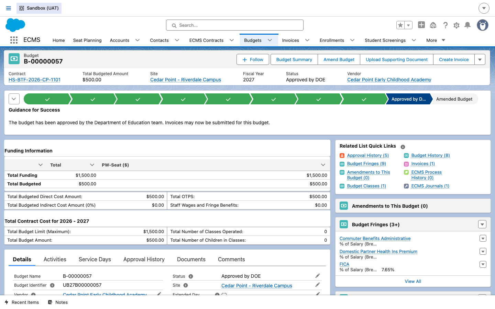
2Log in as the Invoice Manager
DO As the CBO's provisioned Invoice Manager, log into the vendor portal.
RESULT The portal home page loads with a Create Invoice quick-action tile alongside Create Budget, Create Enrollment, and Report Incident.
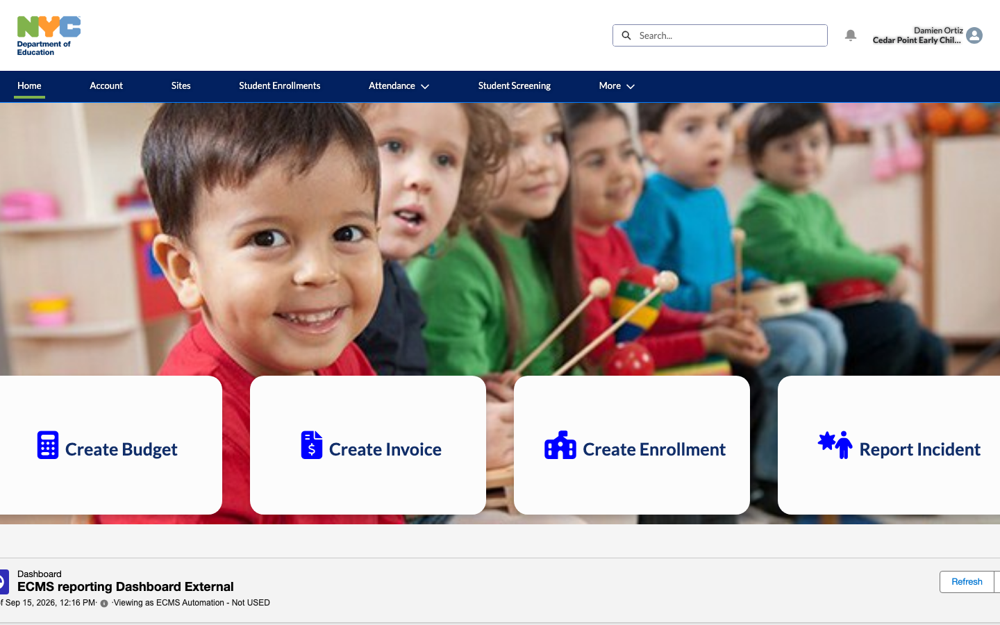
3Open the vendor's Invoices list
DO Click the Create Invoice tile.
RESULT ECMS opens the portal's Invoices list, scoped to this vendor. From here, the Invoice Manager can click New to start another invoice, or continue an existing one.
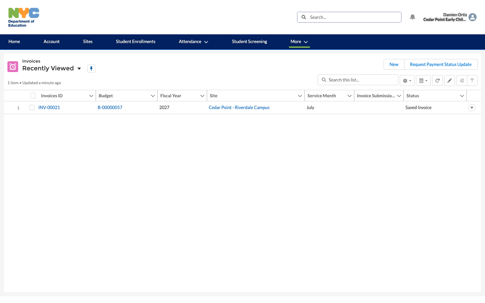
4Review the saved invoice
DO Click an invoice number and review its detail page: Site, Service Month, Invoice Total Amount, and the linked Budget, before submitting it.
RESULT The invoice's own status stepper shows Saved Invoice as the current stage, with guidance text: "Vendor has created the invoice and is still adding information prior to submitting for approval." The Submit Invoice button is available in the action bar, and Approval History is still empty (0) — nothing has been submitted yet.
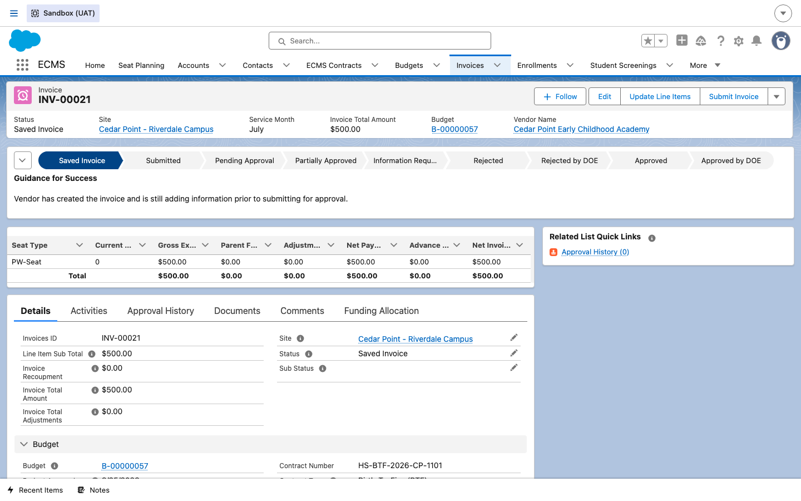
5Submit the invoice
DO Click Submit Invoice in the action bar.
RESULT The invoice's status advances along the stepper from Saved Invoice to Submitted, then to Pending Approval, and an Approval History entry is created recording the submission.
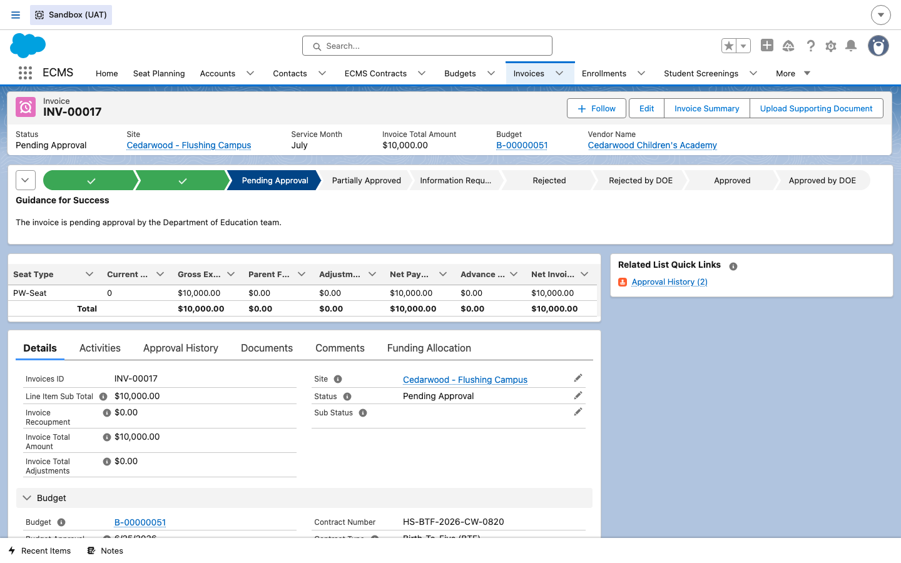
6Find it: the Home page "Items to Approve"
DO As the Operations Analyst (or Operations Director), log in and click Home. Don't go hunting through the Invoices tab for what needs your attention — the Home page already lists it.
RESULT The Items to Approve component lists every Budget and Invoice currently waiting on this user's approval, each as a direct link, with who submitted it. INV-00017 (the invoice submitted in Step 5) is right there alongside other pending Budgets and Invoices — this is the fastest way for an OA or OD to find their next action without being told about it by anyone else.
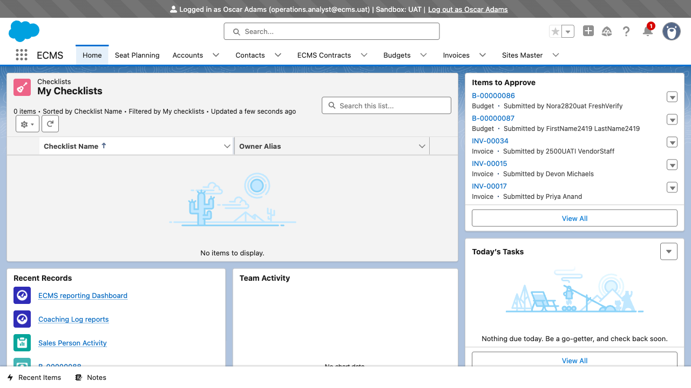
7Operations Analyst (OA) review
DO As the Operations Analyst, open the invoice's Approval History tab and click Approve, Reject, or the small dropdown next to them for Reassign on the pending OA Approval step.
RESULT The Approval History list shows two rows so far: Approval Request Submitted and OA Approval (assigned to Oscar Adams, still Pending). This is the same tab the onboarding materials describe as showing "each step — submission, Operations Analyst review, and Operations Director review — with who acted on it and when."
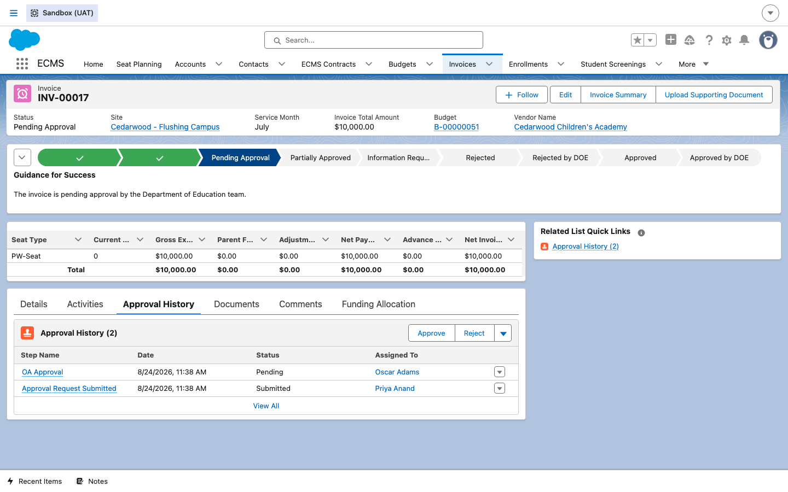
DO If this invoice needs a different OA or OD to act on it (for example, Oscar Adams is out and another OA needs to pick it up), click the dropdown next to Approve/ Reject and choose Reassign instead of approving or rejecting it yourself.
RESULT ECMS opens a small panel to pick the new assignee, without changing the invoice's status or losing any of the Approval History already recorded.
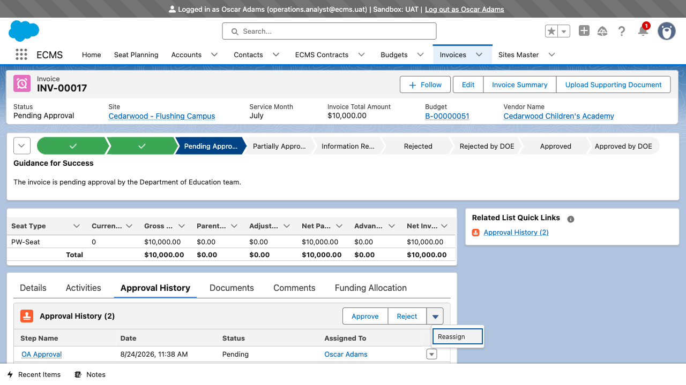
DO Fill in Reassign To (search for the new OA/OD by name), and optionally add Comments explaining why.
RESULT The Reassign Approval Request panel opens with both fields — the same Comments box is also available directly on Approve and Reject, so whoever acts on the step can leave a note for the record either way.
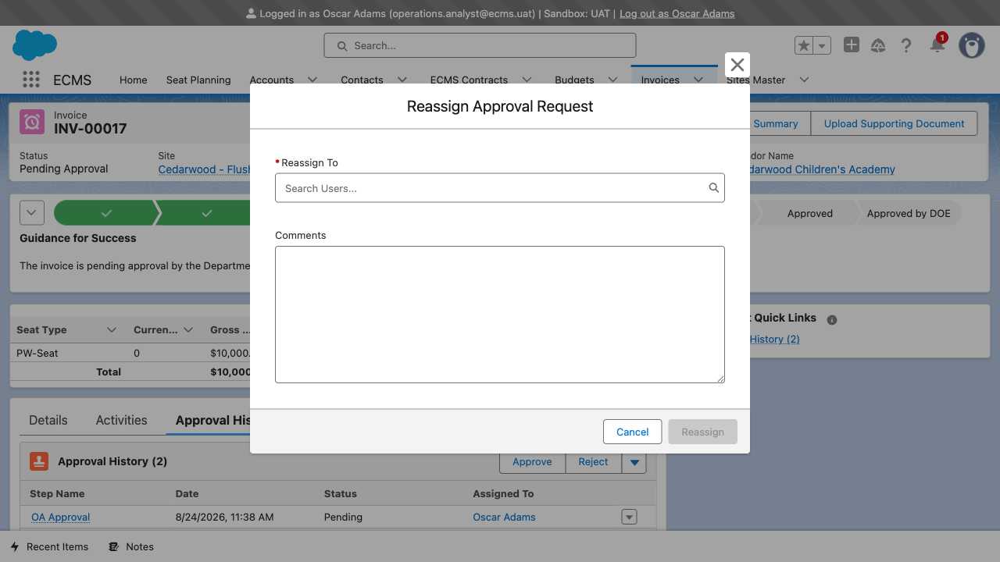
8Operations Director (OD) final approval
DO Once the OA approves, the invoice routes to the Operations Director for the second and final sign-off. The OD reviews the same record and approves it.
RESULT The invoice's status stepper reaches the end: Approved by DOE, with guidance text "The invoice has been approved by the Department of Education team."
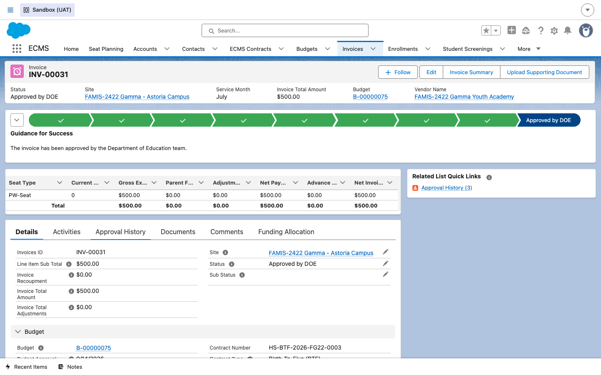
9Read the full Approval History
DO Open the Approval History tab on that same fully-approved invoice.
RESULT All three steps are now visible with a name, a date/time, and a status: Approval Request Submitted (Priya FamisGamma), OA Approval — Approved (Oscar Adams), and OD/DOD Approval — Approved (Olivia Dean). This is the complete audit trail referenced in the ECMS onboarding overview.
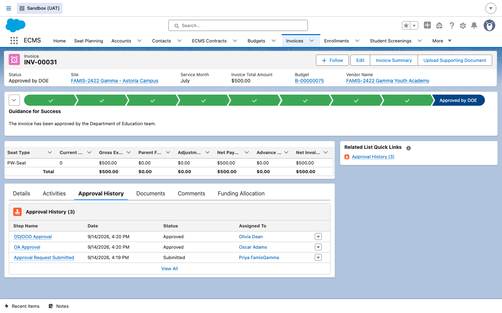
10ECMS sends the invoice to FAMIS
DO No manual action is needed here — once an invoice reaches Approved by DOE, ECMS automatically sends it to FAMIS to trigger the payment. Scroll to the FAMIS Attributes section on the Details tab to see the result.
RESULT INV-00031 now shows a FAMIS Document Number and a FAMIS Payment Status of Paid. ECMS periodically checks back with FAMIS and updates this same field, so the invoice record itself becomes the single place to see whether a payment was sent, paid, or rejected.
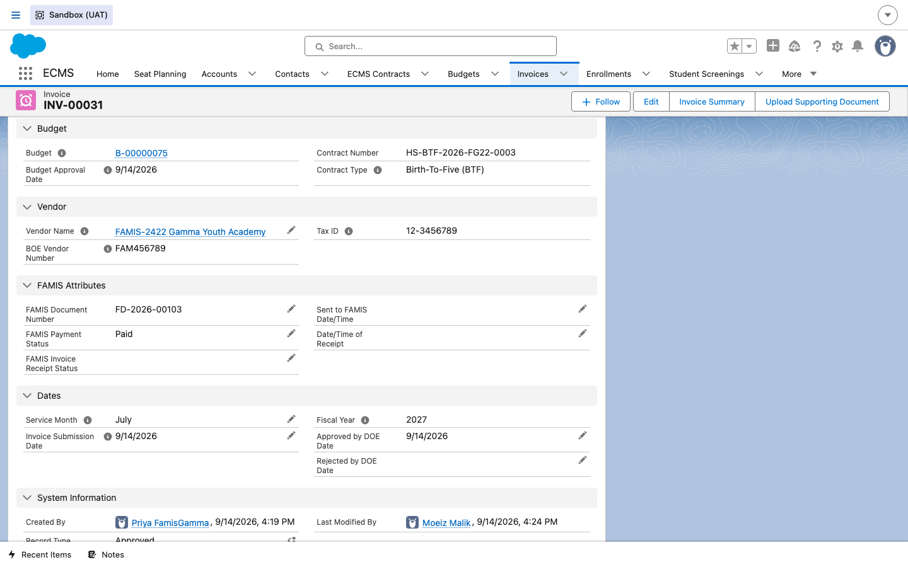
11Funding Allocation & Available Balance
DO As an OA, OD, or Internal Admin, open any invoice and click its Funding Allocation tab (external vendor users do not see this tab at all).
RESULT A Payment Information table lists every FV (Full Value contract) line this invoice is being paid against, each with its own Suffix, Reference Number, Quick Code, Quick Code Description, and an editable Payment Amount. INV-00027 is split across two FV lines — FV 45345/Suffix 02 ($500.00) and FV 3243/Suffix 01 ($0.00) — with a running Total Payment Amount at the bottom.
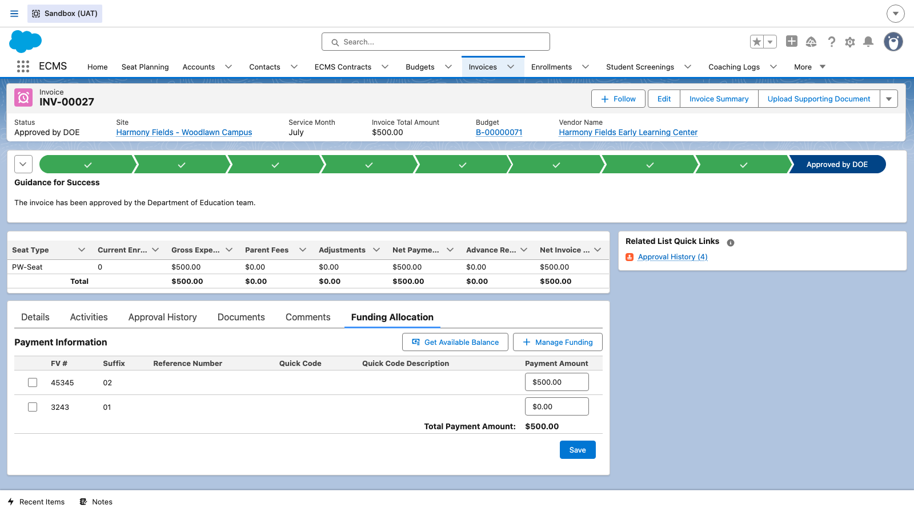
DO Select one or more FV lines with their checkboxes, then click Get Available Balance.
RESULT ECMS calls FAMIS on demand and retrieves the current available funding balance for that FV/suffix match, so the OA or OD knows how much room is left before raising the next invoice against the same funding line — without having to wait for a scheduled sync.
12Batch-refresh payment status for Open/Non-Paid invoices
DO As an OA, OD, or Internal Admin, open the Invoices tab and switch to the Open/Non-Paid Invoices list view.
RESULT ECMS shows every invoice whose FAMIS Payment Status is not yet Paid or Closed — Document Number, Invoice, Fiscal Year, Site, Vendor, Contract Type, Service Month, Invoice Amount, and current Payment Status, all in one place.
DO Select one or more rows with their checkboxes, then click Request Payment Status Update in the action bar.
RESULT ECMS sends a single batch request to FAMIS containing every selected invoice's FAMIS document number, and updates each invoice's Payment Status individually as FAMIS responds — instead of an OA having to open and refresh invoices one at a time.
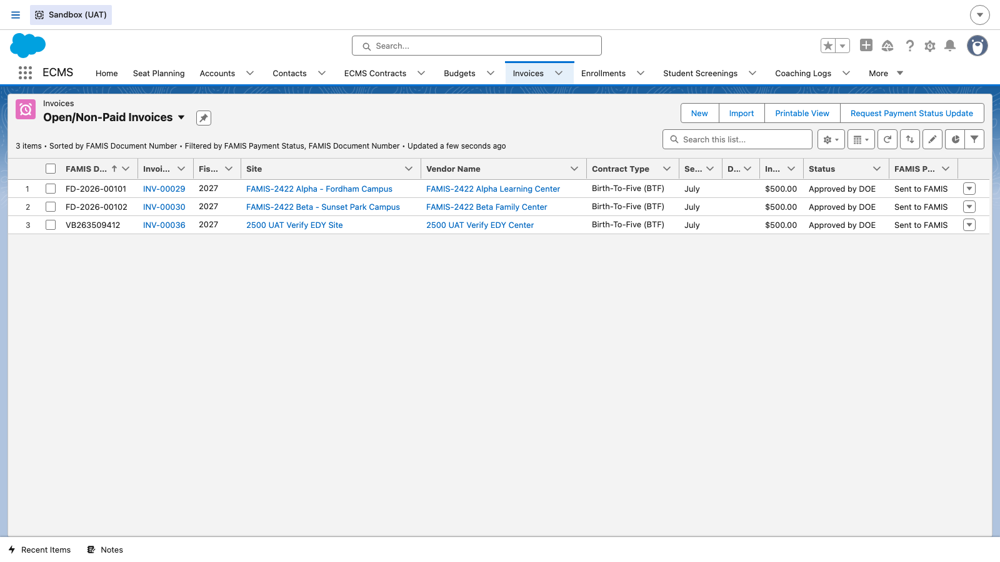
13Advance Payment Invoices (Journals)
DO This step describes a separate record an Operations Analyst (OA) can create, rather than something the Invoice Manager does in Steps 1–10 above. In ECMS, an Advance Payment Invoice is stored as a Journal record (an existing Phase 1 object that calculates advancements and recoupments), not as a regular Invoice record.
RESULT A Journal with its Advance Payment checkbox selected does not wait for the budget to reach Approved by DOE the way a regular invoice does — it can be created once the budget is Submitted or Approved and linked to a valid contract number. JOU-00000003 shows what a real one looks like: Type Advancement Account, linked back to its Originating Budget (B-00000022), with a Total Advancement Amount of $8,612.00.
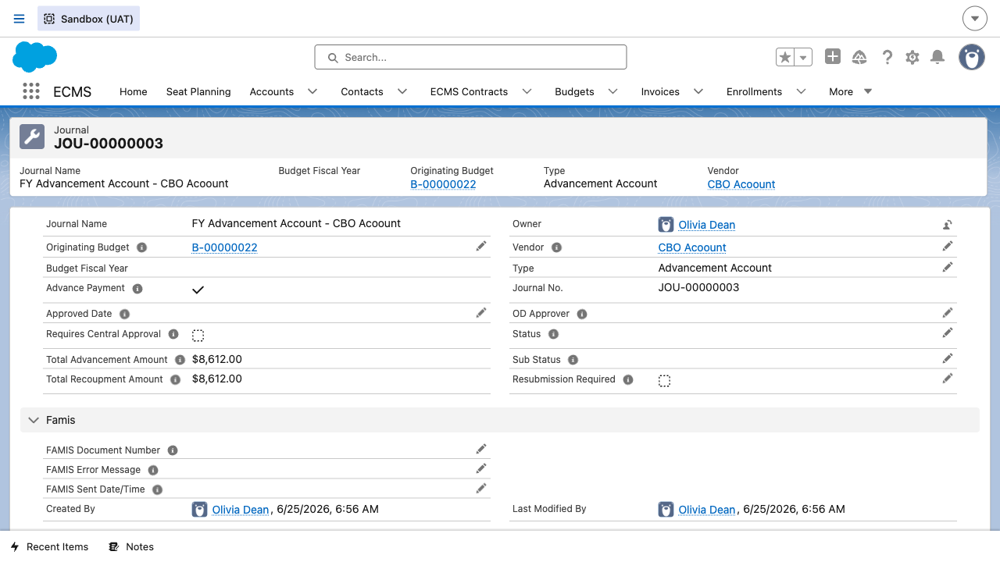
Once created, it routes to the OD for approval (explicitly not the OA) and, where applicable, on to Central Approvers — only after that final approval does ECMS send the advance payment request details to FAMIS, the same way it does for a regular invoice.
14Third-level Central Approval for EDY/HS-CTL invoices
DO Open an invoice that includes one or more EDY or Head Start / Head Start-CTL (HS-CTL) seats, after it has already cleared the normal OA → OD chain, and review its stepper and Approval History tab.
RESULT Invoices with EDY or HS/HS-CTL seats don't go straight to FAMIS once OA and OD approve — they are routed to a Central Approvers queue for a third sign-off, with the invoice status staying Submitted until that last approval is processed.
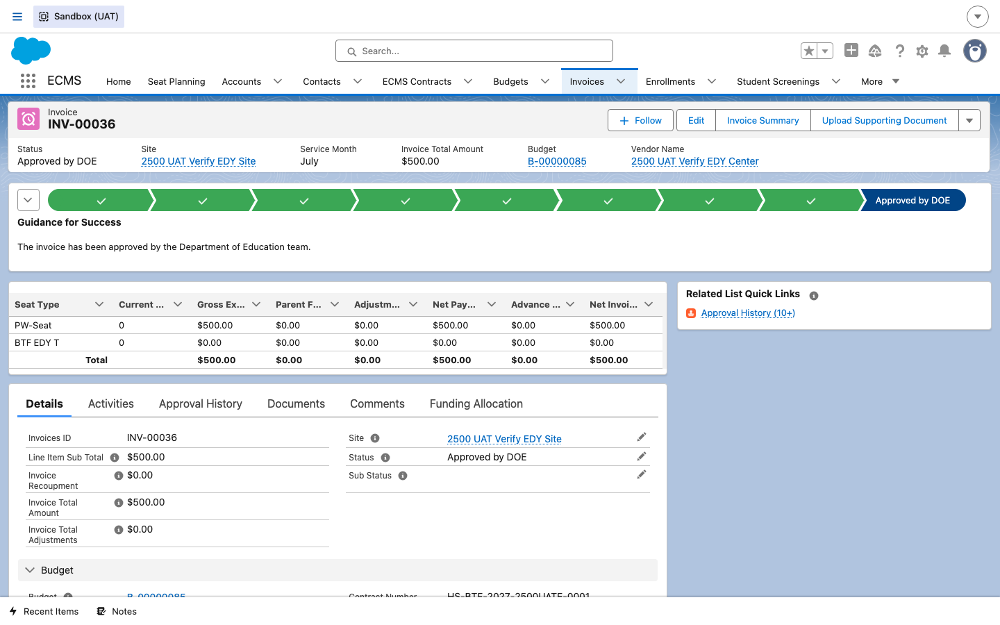
Its Approval History tab makes the extra step explicit: alongside the familiar OD/DOD Approval rows, there are separate Central Approval rows — including one showing a Central Approver Rejecting an earlier submission, and a later one Approved by the Central Approvers queue.
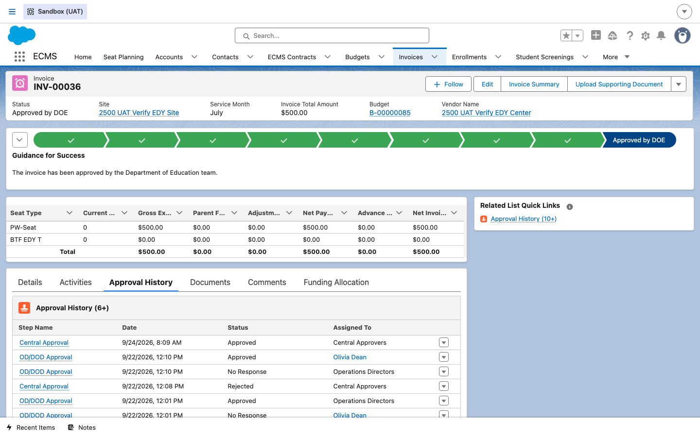